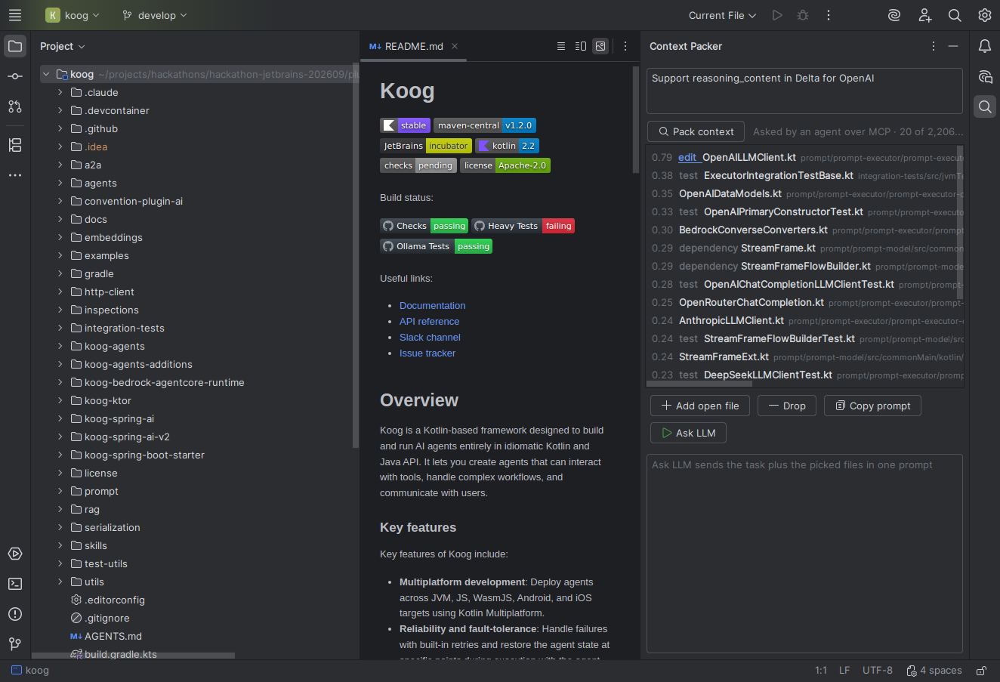
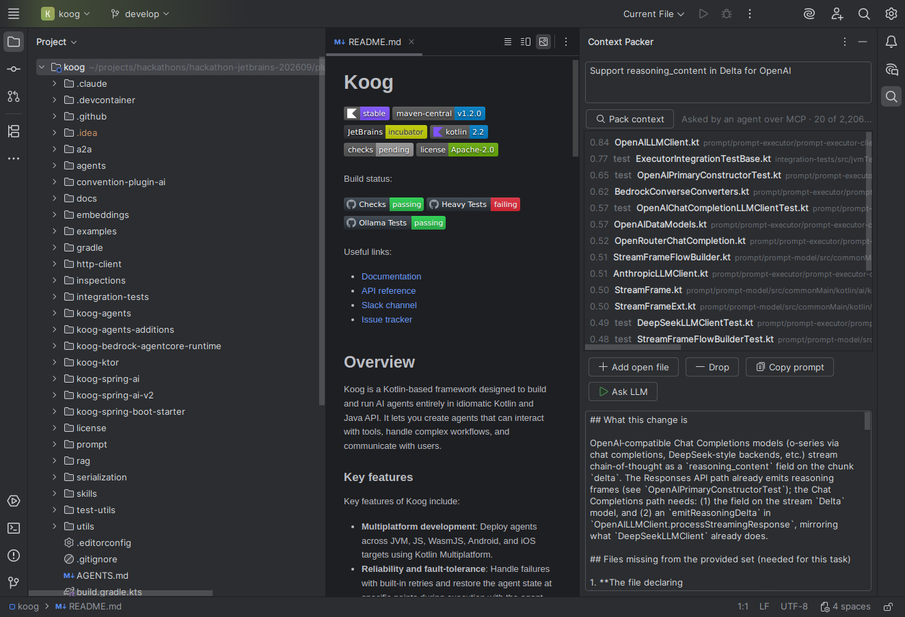

Context Packer · part of IntelliJev
Your coding agent spends its time looking for files. This finds them in four seconds.
Context Packer is an IntelliJ plugin. You describe a change; it reads every file in the project and hands back the handful that change will touch, ranked, with the reason each one matters. People use it from a panel in the IDE, and AI agents get it automatically before they start.
The problem
Ask an AI coding agent to "add exponential backoff to the retry logic" and it doesn't know where that logic lives. So it does what a new colleague would: searches for a word, opens a file, decides it's the wrong one, opens another. Every one of those steps is a round trip to a large language model, which is slow and costs money.
Without Context Packer
- Search the code for "retry"
- Open a file, wrong one
- Search for "backoff"
- Open another, closer
- List a folder
- Find the test
- … then start the actual work
With Context Packer
- The request arrives already carrying a ranked list: the file to edit, the test that checks it, an example to copy
- Read the top files
- Start the actual work
The idea: one AI decides, another writes
There are two kinds of AI in this. Jev decides. The LLM writes.
Jev, from TypeSafe, is a new kind of model that can't write a single sentence. It only answers questions, as probabilities: "how likely is it that this change needs this file?" Because that's all it does, it's fast and very cheap, cheap enough to ask the same question about every file in a project, every time.
The large language model (Claude, GPT and so on) is the one that writes code. It's powerful but slow and expensive, so you want it spending its effort on the right files, not on finding them. Context Packer lets Jev do the looking, so the LLM only does the writing.
How it works, in three steps
Skim everything
Two scouts go through every file at once. One matches words (the classic search engine trick). The other is Jev, reading a one-paragraph summary of each file and judging whether the change needs it. About 2 seconds.
Read the shortlist
The best 60 from each scout, about 100 files, get read in full by Jev, which catches things a summary hides, like a field buried inside a function. About 1 second.
Compare the finalists
Jev looks at the top 10 side by side and picks the one most likely to be edited, and labels the others: the test, an example to follow, an API it depends on. Under half a second.
What it looks like


Does it actually work?
We didn't want a claim, we wanted a measurement. So we used real history: each test is a real change someone made to Koog, JetBrains' own AI-agent framework. We give Context Packer the change's one-line description, show it the code exactly as it was before the change, and check whether it finds the files the developer actually edited. We tuned it on one set of changes and then tested it once on 70 it had never seen.
Better than keyword search. Of the files each change touched, 69% show up in Context Packer's top 10, against 53% for the classic search approach. The margin is large enough that it isn't luck.
Not tuned to one codebase. On a second JetBrains project, Exposed, which it was never tuned on, it still beat keyword search clearly in its top 5 (54% against 43%).
As good as asking an LLM, far faster. Having a language model re-rank the same shortlist gets the same top-10 result, but takes about 29 seconds per request instead of 1. The LLM is still a bit better at picking the top five.
Agents take fewer steps. Claude Code, given the ranked files before it starts, needed a quarter fewer steps and 38% fewer searches to reach the same answer, on 8 real tasks.
What it isn't, yet
- It doesn't make agents finish sooner. Fewer steps and less spend, yes; less waiting, not in our tests. Good agents are already quick at searching for words the task mentions.
- Agents won't use it on their own. Offered as a tool, Claude Code ignored it every time. So it's delivered automatically, before the agent starts.
- Measured on Kotlin, in two repositories. It runs on any language the IDE knows, but only Kotlin is measured.
- It finds existing files. A change that's mostly brand-new files has nothing to find yet.
Where it fits
IntelliJev is the team's bigger idea: a decision layer inside the IDE where a fast, cheap model makes the thousands of small judgements, and the expensive model is called only when it's earned. Context Packer is the first piece of that built and measured end to end. Every other "finder" in IntelliJev runs on the same principle.